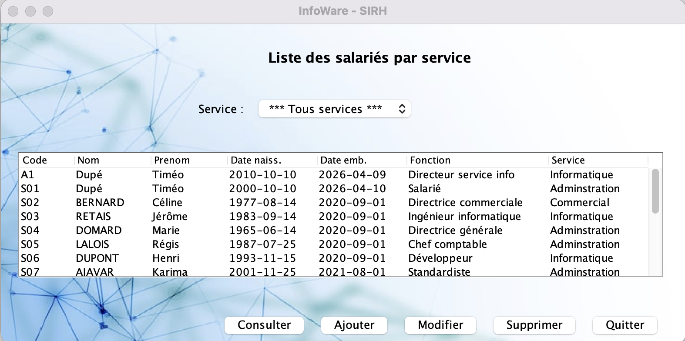
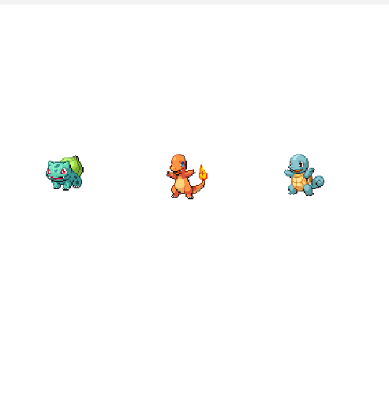
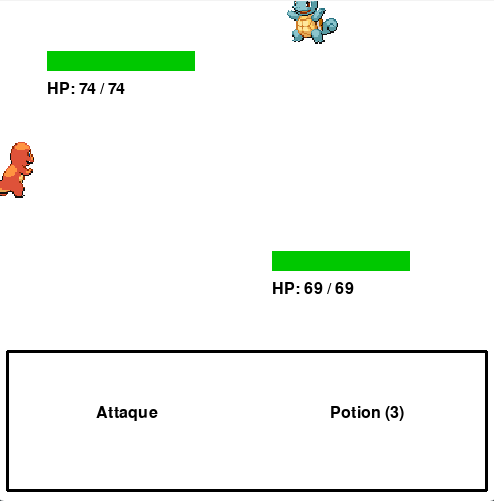
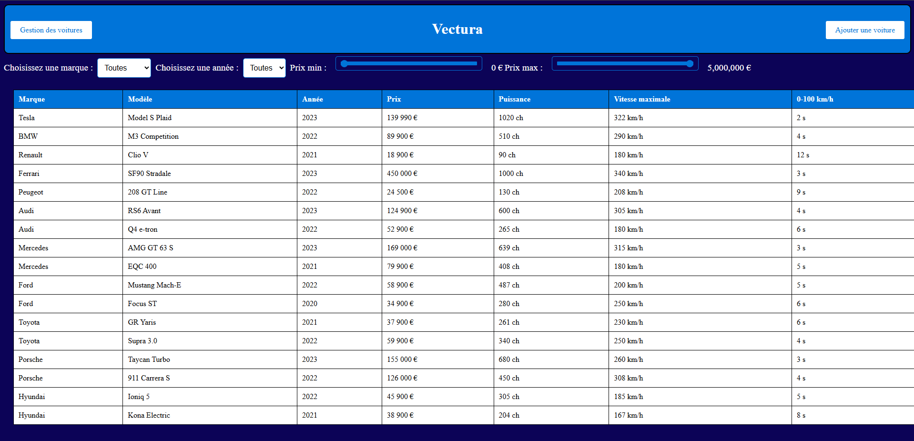
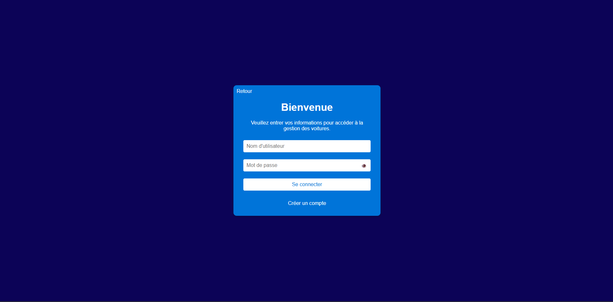

// portfolio
Mes projets

IWAN Ticketing
Développement de zéro d'un logiciel de ticketing pour répondre aux besoins de gestion d'incidents des clients de l'entreprise IWAN.

Projet INFOWARE SIRH
Application de gestion des ressources humaines (CRUD complet) développée en Java (POO) dans le cadre du BTS SIO.

Gestion d'utilisateurs
Automatisation de la création de comptes utilisateurs et génération de bases de données isolées depuis un Active Directory.


Pokevert
Jeu vidéo inspiré de Pokémon développé avec Pygame. Utilisation d'une API externe pour récupérer les sprites et données des créatures.


Vectura
Création d'un site web dynamique avec back-end pour une entreprise de location de véhicules (Base de données et authentification).